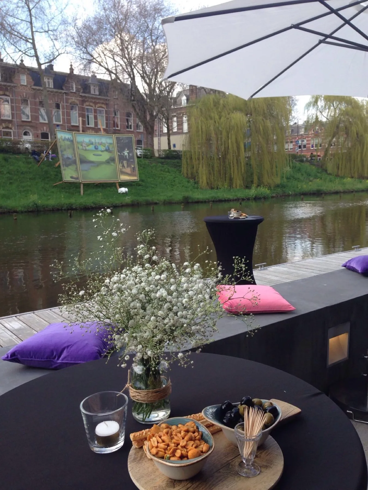

Reserveren
Je tafel staat zo vast
Kies je moment, dag en tijd en je krijgt direct een bevestiging. Reserveren is nooit verplicht: binnenlopen mag altijd.
Goed om te weten
Zo werkt reserveren bij Bolwerk
- Het terras is altijd vrije inloop, daar reserveer je niet
- Tussen 11.30 en 15.30 uur reserveren we alleen voor de lunch
- Vanaf 9 personen gaat het via het groepenformulier
- Je krijgt meteen een bevestiging met agenda-bestand
Is je tijdstip vol? Dan kun je jezelf op de wachtlijst zetten: komt er een tafel vrij, dan bellen we je meteen.
Bolwerk